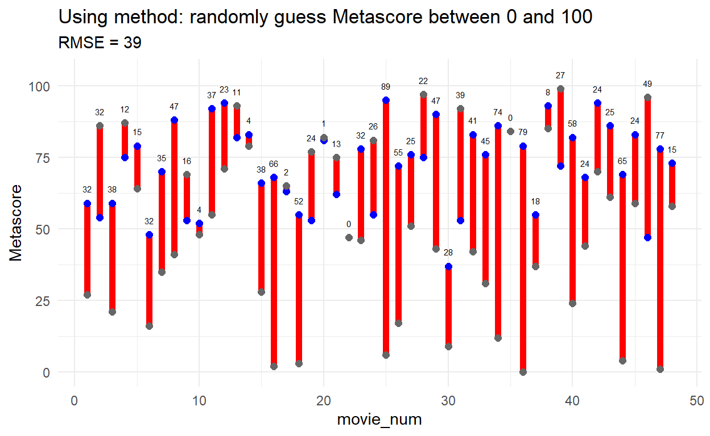
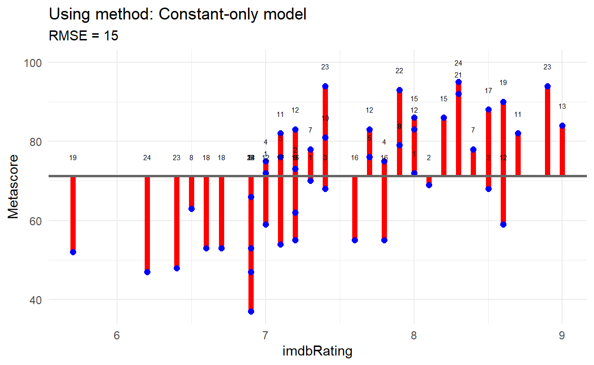

How to train your robot!
In Topic 3B we used supervised machine learning approaches to develop prediction models. In particular, we used linear regression to fit a line to data.
But how do supervised machine learning algorithms work?
To explore some of the key ideas of supervised machine learning algorithms, we’ll explore the task of training a robot to draw lines to make predictions.

Note this interactive investigation will NOT be assesed in the final exam :-)
But first, training data!
For the Tutorial 2B task, you explored building a prediction model using movie ratings. The key words you used to obtain data for training and testing are shown below:
I created a training data set using two movies for each key word, and a testing data set using one movie for each key word. I made sure for both training and testing data sets that I had movies which had both an imdbRating and a Metascore.
What makes this supervised machine learning?
Remember, supervised machine learning is like revising for an exam. You don’t know what will be asked in the exam, but you can learn from what questions were asked in previous exams and what the answers were to these questions.
That’s why we have training data that has the answers (labels) to our question (What is the metascore?), as well as possible features (variables) we can use in our prediction model.
And just like in life, if you don’t revise for an exam (HINT HINT!) using previous exams or examples, you will be no better than an untrained robot trying to get the answer correct!
So let’s start with an untrained robot then!
For this task, our goal is to build a model that predicts the metascore of a movie.
We will tell our robot what to do through code. So that our robot can learn, we need some sort of score to measure their performance.
In the code below, we only tell the robot the metascores are between 0 and 100. That’s it! The robot then just guesses a
Metascorebetween these two numbers. Run the code a few times and see how well the robot performs!
# the actual metascore
actual_metascore <- training_data %>%
sample_n(1) %>%
pull(Metascore)
# the robot-generated metascore
predicted_metascore <- 0 : 100 %>%
sample(1)
# Did the robot get it correct?
correct <- ifelse(actual_metascore == predicted_metascore,
"correct",
"wrong")
# Print a message
glue("The actual metascore was {actual_metascore}.\nThe robot predicted a metascore of {predicted_metascore}.\nThis is {correct}.")Is this the best way to learn?
If we just tell our robot “correct” or “wrong” and don’t let them know why they were wrong, how well our robot learn to do better?
In the code below, we still only tell the robot the metascores are between 0 and 100. The robot then just guesses a
Metascorebetween these two numbers. But this time we tell the robot how wrong they were, by telling them how different the actualMetascorescore was from what they predicted.
# the actual metascore
actual_metascore <- training_data %>%
sample_n(1) %>%
pull(Metascore)
# the robot-generated metascore
predicted_metascore <- 0 : 100 %>%
sample(1)
# Did the robot get it correct?
error <- abs(actual_metascore - predicted_metascore)
# Print a message
glue("The actual metascore was {actual_metascore}.\nThe robot predicted a metascore of {predicted_metascore}.\nYou were wrong by {error} points.")Finding an optimal approach
You can probably see that the method our robot is using to make predictions is not going so well. But we need some way of measuring why it’s not going so well, so when we try new methods, we can measure the progress of our learning.
Let’s try out our robot’s current method for predicting the Metascore on all 48 movies in our training data.
In the plot below, the actual
Metascorefor each movie is shown in blue, and the robot’spredictedMetascoreis shown in dark gray. How wrong the robot is - the error - is shown with a red vertical line, with the length of the line shown above - the number of points away from the actualMetascore.
So, overall, how well did our robot do?
If we look at how long each of the red lines, and take the average of these lengths, this will give us an overall measure of our error.
The technical term for this measure is the root mean square error or RMSE. How you calculate it is a bit more complicated then just finding “the average size of the errors” but that’s basically the idea.

Ready to learn?
So, the method of just guessing gave a RMSE of 39, which means that this model will generate predictions for the Metascore that are about 39 points away, on average, from what they actually are (for the training data). I think our robot can do better!!
We’ve been a bit mean and not let our robot look at any of the Metascore values for the training data. What could the robot learn from these?
Run the code below to visualise all the
Metascorevalues for the movies in the training data.
training_data %>%
ggplot() +
geom_dotplot(aes(x = Metascore),
binwidth = 1) +
scale_y_discrete(breaks = NULL, NULL) Turns out, none of the Metascore values are below 37, and the mean Metascore is 71. Our robot can learn from this to do a better job of predicting!

The simplest regression model!
The simplest regression model that we can use to make predictions is to just use the mean value of the response variable. This is also called the constant only model. In this case, this would be just to predict that a movie has whatever the mean Metascore ratings are for all the movies in the training data.
Run the code a few times below to see how well our robot performs with this new method!
# the actual metascore
actual_metascore <- training_data %>%
sample_n(1) %>%
pull(Metascore)
# the robot-generated metascore
predicted_metascore <- mean(training_data$Metascore) %>% round()
# Did the robot get it correct?
error <- abs(actual_metascore - predicted_metascore)
# Print a message
glue("The actual metascore was {actual_metascore}.\nThe robot predicted a metascore of {predicted_metascore}.\nYou were wrong by {error} points.")It looks like the predictions were closer…
But let’s check out how this approach works. Does it give us a lower RMSE than before?
Woo hoo! Our RMSE is now down to only 15 points! So, the method of always using the mean
Metascore(the constant-only model) will generate predictions for theMetascorethat are about 15 points away, on average, from what they actually are (for the training data).
Is that all for our robot’s learning?
Hmmm, I think our robot can still do even better! Take another look at the method our robot used, with a slightly different visualisation.

Can you see that for movies that have an
imdbRatingof less than 7.5, the most of actualMetascorevalues are lower than the mean of 71? And that most of the movies withimdbRatingvalues higher than 7.5 have actualMetascorevalues higher than the mean of 71?
Putting some slope into our model!
Let’s get our robot to try out a line that has a slope as well as a constant. The robot has worked out the best place to start with fitting a line - by using the centroid. The centroid is positioned at 7.5 for the imdbRating and 71 for the Metascore.
But how will the robot learn what slope to make the line? Put yourself in the role of a robot! Run the code below, changing the slope each time, and see if you can work out how the robot will learn what the “line of best fit” is!
# try changing the slope!
slope <- 0
checkModel(training_data, slope)And that’s the essential idea behind supervised machine learning!
The robot will keep trying over and over again, until it finds the line that fits the data with the lowest RMSE. It’s like giving a learning objective for the robot to build a model that produces predictions that are the closest to the real thing as it can get, given the constraints of only using one feature/variable (imdbRating) and a single straight line.